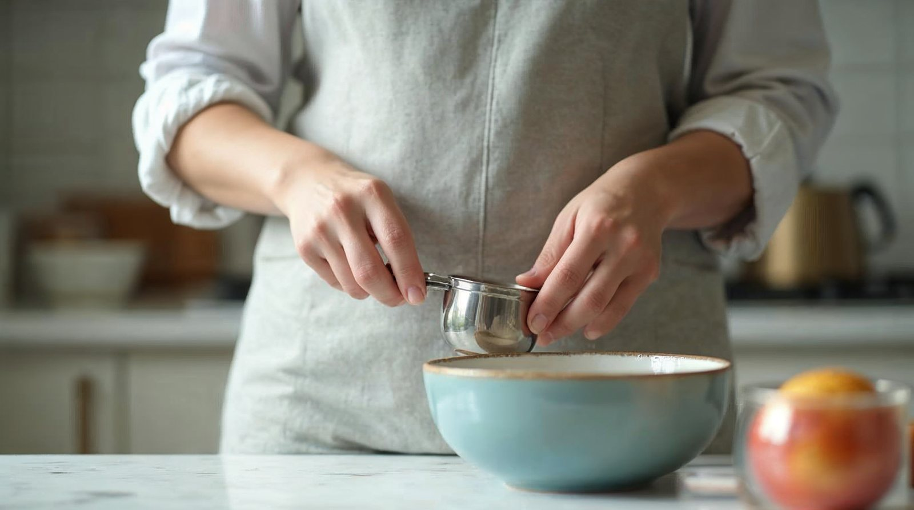
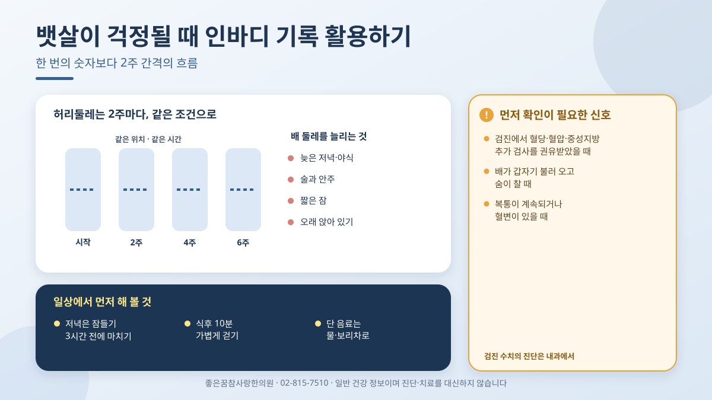

이종호 한의사 감수좋은꿈참사랑한의원 대표원장 (한의사 면허번호 19769)발행 2026-11-23 · 수정 2026-11-26
이 글의 차례
- 왜 이런 변화가 생길 수 있나요
- 먼저 이렇게 여쭙니다
- 스스로 점검해 보세요
- 뱃살과 헷갈리기 쉬운 경우는 무엇인가요?
- 허리둘레는 어떻게 재면 매번 같은 조건이 될까요?
- 일상에서 먼저 해 볼 수 있는 것
- 앉아 있는 시간을 줄이는 작은 방법
- 상황별 예시
- 저녁 식욕이 커지는 이유도 함께 살핍니다
- 숫자가 그대로일 때 마음을 다잡는 방법
- 얼마나 지켜보고 언제 상담할까요
- 회식이나 외식이 있는 날은 어떻게 고르면 좋을까요?
- 한의원에서 함께 살필 수 있는 경우
- 왜 허리둘레를 체중보다 먼저 볼까요?
- 진료실에서는 배를 이렇게 살핍니다
- 이렇게 기록해 오시면 상담이 쉬워집니다
- 이런 증상은 먼저 확인이 필요합니다
- 함께 읽으면 좋은 글
체중계 숫자는 그대로인데 바지 허리가 끼기 시작했다면, 허리둘레와 체지방 기록을 함께 보는 것이 몸의 변화를 알아차리는 데 더 쓸모가 있습니다. 늦은 저녁, 잦은 술자리, 짧은 잠, 오래 앉아 있는 생활이 겹치면 배 쪽에 지방이 쌓이기 쉬워 생활 리듬부터 함께 살핍니다.
이 글에서는 인바디 770 결과지의 어느 칸을 허리둘레와 함께 보면 좋은지, 몇 주 동안 무엇을 적어 두면 흐름이 보이는지, 어떤 경우에는 생활 관리보다 검사가 먼저인지 정리했습니다.
체지방률이나 허리둘레의 기준은 성별 등에 따라 달라 이 글에서 숫자로 정하지 않고, 진료 때 결과지의 표준 범위 표시를 함께 보며 설명드립니다. 인바디 기록은 몸의 변화를 살피는 참고 자료이고, 기록만으로 뱃살이 줄어든다고 말씀드리기는 어렵습니다.
왜 이런 변화가 생길 수 있나요
- 늦은 저녁과 야식은 활동이 적은 밤 시간에 열량을 쌓이게 해 복부 지방으로 이어지기 쉽습니다.
- 술은 그 자체의 열량에 안주까지 더해지고, 다음 날 식욕을 흔들 수 있습니다.
- 잠이 짧으면 식욕이 커지는 경향이 있다고 알려져 있어 야식으로 이어지기 쉽습니다.
- 하루 대부분을 앉아서 보내면 몸을 쓰는 양이 줄어 배 둘레가 늘기 쉽습니다.
- 스트레스가 쌓이면 배가 고프지 않아도 먹게 되는 경우가 있어, 낮에 식사량만 줄이면 저녁에 몰아 먹기 쉽습니다.
- 결과지에는 체지방량과 함께 부위별 체지방 칸이 있어 몸통 쪽 지방이 어떻게 움직이는지 지난 기록과 견주어 볼 수 있습니다. 다만 허리둘레와 결과지 숫자가 늘 같은 방향으로 움직이지는 않아 둘을 함께 봅니다.
먼저 이렇게 여쭙니다
- 저녁 식사는 보통 몇 시에 하시나요?
- 야식이나 술자리가 일주일에 몇 번 있나요?
- 잠은 몇 시에 들고 몇 시간 정도 자나요?
- 앉아 있는 시간이 하루에 얼마나 되나요?
- 최근 건강검진에서 혈당·혈압·중성지방 이야기를 들으셨나요?
스스로 점검해 보세요
- 체중은 그대로인데 바지 허리가 끼기 시작했다
- 저녁 식사가 잠들기 두세 시간 안으로 늦어지는 날이 잦다
- 일주일에 야식이나 술자리가 두세 번 넘게 있다
- 잠이 부족한 다음 날 단 음식이나 군것질이 당긴다
- 식사 뒤 배가 더부룩하고 가스가 차는 날이 많다
- 하루 대부분을 앉아서 보내고 식후에 바로 눕는다
- 건강검진에서 혈당·혈압·중성지방이 경계선이라는 말을 들었다
여러 항목이 겹친다면 식사량보다 저녁 시각과 잠의 리듬부터 함께 보는 것이 순서입니다. 마지막 항목에 해당하면 생활 기록과 함께 검진 결과지를 챙겨 오세요.
뱃살과 헷갈리기 쉬운 경우는 무엇인가요?
배가 나와 보이는 이유가 늘 지방 때문만은 아닙니다. 식사 뒤 가스가 차서 배가 빵빵해지는 경우, 변비로 아랫배가 묵직한 경우, 허리를 펴지 못하고 구부정하게 앉는 자세 때문에 배가 앞으로 밀려 보이는 경우도 있습니다.
예를 들어 아침에는 배가 납작한데 저녁만 되면 불러 오는 경우라면 지방보다 소화와 가스를 먼저 살핍니다. 지방은 하루 사이에 크게 늘고 줄지 않기 때문입니다. 이럴 때는 식사 속도와 탄산음료, 배변 리듬을 먼저 여쭙습니다.
허리둘레는 늘었는데 결과지의 체지방량은 그대로라면 측정 조건과 함께 이런 경우도 떠올려 봅니다. 반대로 허리둘레와 몸통 체지방이 함께 꾸준히 늘었다면 저녁 시각과 활동량 쪽에서 원인을 찾아봅니다.
허리둘레는 어떻게 재면 매번 같은 조건이 될까요?
- 아침에 일어나 화장실을 다녀온 뒤, 식사 전에 재기
- 선 자세에서 발을 어깨너비로 벌리고 숨을 편하게 내쉰 순간에 재기
- 갈비뼈 맨 아래와 골반 뼈 위쪽의 가운데쯤을 매번 같은 높이로 재기
- 줄자가 바닥과 수평이 되게 두르고, 살을 조이지 않을 만큼만 당기기
거울 앞에서 재면 줄자가 기울지 않았는지 확인하기 쉽습니다. 혼자 재기 어렵다면 가족에게 부탁해도 좋고, 진료 때 함께 재는 자리를 정해 드릴 수도 있습니다.

일상에서 먼저 해 볼 수 있는 것
- 허리둘레를 같은 위치, 같은 시간에 2주마다 재 두기
- 저녁 식사를 잠들기 3시간 전에는 마치기
- 식후 10분 가볍게 걷기
- 단 음료를 물이나 보리차로 바꾸기
- 술자리는 횟수부터 줄이고 안주는 채소·단백질 위주로 고르기
기록은 한 장에 모아 두면 흐름이 잘 보입니다. 왼쪽에는 날짜와 허리둘레·체중, 가운데에는 인바디를 잰 날의 체지방량과 골격근량, 오른쪽에는 그 주의 저녁 시각과 술자리 횟수, 평균 수면 시간을 적어 보세요. 숫자가 한 번 오르내린 것에 마음 쓰기보다 생활 칸이 어떻게 바뀌었는지와 나란히 보는 것이 다음 계획을 세우는 데 쓸모가 있습니다.
앉아 있는 시간을 줄이는 작은 방법
하루 대부분을 책상 앞에서 보내는 분은 따로 운동 시간을 내기보다 앉아 있는 시간을 끊어 주는 것부터 시작해 보세요. 한 시간에 한 번 일어나 물을 뜨러 가거나, 전화를 받을 때 서서 받는 것처럼 작은 움직임도 하루를 모으면 꽤 됩니다.
식사 뒤에는 바로 자리에 앉기보다 5분이라도 걸어 보세요. 점심을 먹고 건물 한 바퀴를 돌거나, 저녁 뒤 설거지를 서서 마치는 것도 좋습니다. 식후에 몸을 움직이면 더부룩함이 덜하다고 느끼는 분도 많습니다.
이런 움직임은 기록장에 횟수로 적어 두세요. 저는 허리둘레 칸 옆에 움직임 칸을 함께 보며, 어느 주에 앉아 있는 시간이 길었는지와 허리둘레가 어떻게 움직였는지를 나란히 살핍니다.
상황별 예시
- 예를 들어 회식이 잦은 직장인이라면, 술자리를 한꺼번에 끊기보다 일주일 횟수를 하나 줄이고 다음 날 아침을 거르지 않는 것부터 정합니다. 술자리 다음 날 잰 기록은 따로 표시해 두면 흐름을 읽을 때 헷갈리지 않습니다.
- 예를 들어 아이를 재운 뒤 늦은 밤에 끼니를 몰아 드시는 육아 중인 분이라면, 저녁을 아이와 함께 조금이라도 먼저 드시고 밤에는 따뜻한 차로 마무리하는 식으로 끼니 간격부터 함께 맞춥니다.
- 예를 들어 은퇴 뒤 활동이 줄면서 배가 나오기 시작한 어르신이라면, 식후 10분 걷기처럼 무리 없는 움직임부터 시작하고, 혈압·혈당 약을 드신다면 처방받은 내용을 확인하며 생활 계획을 정합니다.
저녁 식욕이 커지는 이유도 함께 살핍니다
뱃살 때문에 오신 분께 하루 식사를 여쭈면, 아침은 거르고 점심은 급하게, 저녁에 몰아 드시는 흐름이 자주 보입니다. 낮 동안 쌓인 허기와 긴장이 저녁에 한꺼번에 풀리면서 식사량이 커지고 야식으로 이어지기 쉽습니다.
이럴 때는 저녁을 참는 것보다 낮의 끼니를 먼저 챙기는 쪽이 오래갑니다. 오후 서너 시쯤 견과 한 줌이나 우유 한 잔처럼 가벼운 간식을 두면 저녁의 허기가 덜 몰리는 분이 많습니다.
잠이 짧은 날 단 음식이 당기는 것도 흔한 일입니다. 저는 식사 기록과 함께 잠든 시각을 나란히 놓고 보며, 잠이 짧았던 다음 날 야식이 늘었는지를 같이 찾아봅니다. 그 연결이 보이면 식사보다 잠을 먼저 손보기도 합니다.
숫자가 그대로일 때 마음을 다잡는 방법
몇 주 노력했는데 허리둘레가 그대로라면 실망스러울 수 있습니다. 그럴 때는 숫자 칸 대신 생활 칸을 먼저 보세요. 저녁 시각이 당겨졌는지, 야식 횟수가 줄었는지, 잠이 길어졌는지가 바뀌었다면 몸은 이미 다른 방향으로 가고 있는 중입니다.
지방은 몇 주 단위로 천천히 움직여, 생활 변화가 숫자에 보이기까지 시간이 걸리는 경우가 많습니다. 저는 그 시간을 함께 기다리며 계획이 생활에 맞는지 다시 살펴 드립니다.
얼마나 지켜보고 언제 상담할까요
- 생활을 바꾼 뒤 첫 한두 주는 숫자보다 저녁 시각과 잠, 술자리 기록이 잘 이어지는지부터 보세요.
- 기록이 두세 번 쌓였는데도 허리둘레가 계속 늘거나, 야식과 술을 줄이기가 생각보다 어렵다면 혼자 버티기보다 상담을 받아 보세요.
- 더부룩함이나 속쓰림이 몇 주 넘게 이어진다면 소화 상태를 먼저 살펴야 하므로 미루지 말고 진료를 받아 보세요.
회식이나 외식이 있는 날은 어떻게 고르면 좋을까요?
약속을 피하기 어려운 날에는 먹지 않는 것보다 고르는 쪽에 마음을 두시면 덜 지칩니다. 자리에 앉으면 먼저 채소나 두부 같은 안주를 시키고, 튀김과 국물 요리는 한 가지로 줄이며, 술잔 사이에 물을 한 잔씩 드셔 보세요.
마지막에 밥이나 라면으로 마무리하는 습관이 있다면 그것 하나만 빼도 기록에서 차이가 보이는 경우가 많습니다. 다음 날 아침은 거르지 말고 가볍게라도 드셔야 점심과 저녁의 허기가 덜 몰립니다.
이런 날은 기록장에 별표를 해 두세요. 저는 별표가 붙은 날과 붙지 않은 날의 허리둘레와 잠을 나란히 놓고 보면서, 어떤 자리가 몸에 더 부담이 되는지 함께 찾아봅니다.
한의원에서 함께 살필 수 있는 경우
- 복부 지방이 늘면서 소화가 더부룩한 경우 식사 습관과 소화를 함께 살핍니다.
- 야식을 끊기 어려운 경우 저녁의 허기와 잠의 리듬을 함께 살핍니다.
- 건강검진 수치가 경계선에 있는 경우 생활 리듬을 함께 점검하고 필요하면 내과 진료를 안내합니다.
좋은꿈참사랑한의원에서는 모든 분께 맥부터 짚고, 맥을 짚으면서 저녁과 술, 잠의 흐름을 여쭙습니다. 혀와 배를 살펴 소화와 식욕 상태를 함께 보고, 필요하다고 판단될 때 인바디 770으로 체지방 변화를 확인해 결과지의 표준 범위 표시와 허리둘레 기록을 나란히 놓고 설명드립니다.
그다음 저녁 시각이나 술자리 횟수처럼 지금 바꿀 수 있는 목표를 한두 가지 정하고, 식사 계획과 침, 한약 상담 등 맞는 방법을 함께 고릅니다. 몇 주 뒤 다시 비교할 날도 정해 드립니다.
처음 오시면 접수 때 드시는 약과 몸속 전자 의료기기가 있는지 먼저 말씀해 주세요. 측정 비용이나 보험 적용 여부는 방문 전 전화로 확인해 주세요.
왜 허리둘레를 체중보다 먼저 볼까요?
체중은 근육과 물, 지방이 모두 더해진 숫자라 뱃살이 늘었는지 줄었는지를 정확히 보여 주지 못합니다. 운동을 시작해 근육이 붙으면 체중은 그대로인데 허리가 줄기도 하고, 반대로 활동이 줄면 체중은 같아도 허리가 늘기도 합니다.
허리둘레는 줄자 하나로 집에서 잴 수 있고, 배 쪽에 쌓인 지방의 흐름을 비교적 잘 보여 주는 숫자로 알려져 있습니다. 그래서 저는 인바디를 재지 않는 주에도 허리둘레만큼은 2주마다 적어 두시라고 권합니다.
다만 허리둘레도 그날의 식사와 가스, 자세에 따라 조금씩 달라집니다. 한 번 줄었다고 기뻐하거나 늘었다고 실망하기보다, 서너 번 쌓인 흐름을 보는 것이 좋습니다.
진료실에서는 배를 이렇게 살핍니다
뱃살로 오신 날에는 맥을 짚은 뒤 누우신 자세에서 배를 가볍게 눌러 봅니다. 윗배가 단단하게 막힌 느낌인지, 아랫배가 차고 묵직한지, 눌렀을 때 불편한 곳이 있는지를 살피며, 식후 더부룩함과 배변 리듬을 함께 여쭙습니다. 이렇게 보면 지방 말고도 소화 쪽에서 먼저 손볼 부분이 보이는 경우가 있습니다.
배를 살핀 내용은 기록해 두었다가, 다시 오셨을 때 허리둘레 기록과 함께 그사이 더부룩함과 배변이 어떻게 달라졌는지 이어서 여쭙습니다.
이렇게 기록해 오시면 상담이 쉬워집니다
- 2주마다 잰 허리둘레와 체중
- 일주일 동안의 저녁 시각과 야식·술자리 횟수
- 잠든 시각과 일어난 시각
- 최근 검진 결과지
이런 증상은 먼저 확인이 필요합니다
- 배가 갑자기 눈에 띄게 불러 오거나, 배가 부르면서 숨이 찬 경우
- 복통이 계속되거나 혈변이 보이는 경우
이런 신호가 있으면 한의원보다 가까운 병원이나 응급실을 먼저 찾으세요.
함께 읽으면 좋은 글
- 야식을 끊기 어려울 때는 어떤 점을 먼저 살펴보나요?
- 체중은 보통인데 복부 지방이 걱정될 때는 어떤 검진을 보나요?
- 콜레스테롤과 중성지방 수치가 높게 나오면 생활에서 무엇부터 보나요?

여쭙는 것
- 저녁 식사는 보통 몇 시에 하시나요?
- 야식이나 술자리가 일주일에 몇 번 있나요?
- 잠은 몇 시에 들고 몇 시간 정도 자나요?
생활에서 해 볼 것
- 허리둘레를 같은 위치, 같은 시간에 2주마다 재 두기
- 저녁 식사를 잠들기 3시간 전에는 마치기
- 식후 10분 가볍게 걷기
한의원에서 함께 살필 것
- 복부 지방이 늘면서 소화가 더부룩한 경우 식사 습관과 소화를 함께 살핍니다.
- 야식을 끊기 어려운 경우 저녁의 허기와 잠의 리듬을 함께 살핍니다.
- 건강검진 수치가 경계선에 있는 경우 생활 리듬을 함께 점검하고 필요하면 내과 진료를…
먼저 확인이 필요한 신호
- 배가 갑자기 눈에 띄게 불러 오거나, 배가 부르면서 숨이 찬 경우
- 복통이 계속되거나 혈변이 보이는 경우
한눈에 보는 표
| 구분 | 핵심 |
|---|---|
| 여쭙는 것 | 저녁 식사는 보통 몇 시에 하시나요? 야식이나 술자리가 일주일에 몇 번 있나요? |
| 생활에서 해 볼 것 | 허리둘레를 같은 위치, 같은 시간에 2주마다 재 두기 저녁 식사를 잠들기 3시간 전에는 마치기 |
| 한의원에서 함께 살필 것 | 복부 지방이 늘면서 소화가 더부룩한 경우 식사 습관과 소화를 함께 살핍니다. 야식을 끊기 어려운 경우 저녁의 허기와 잠의 리듬을 함께 살핍니다. |
| 먼저 확인이 필요한 신호 | 배가 갑자기 눈에 띄게 불러 오거나, 배가 부르면서 숨이 찬 경우 복통이 계속되거나 혈변이 보이는 경우 |
자주 묻는 질문
뱃살만 따로 뺄 수 있나요?
특정 부위만 골라 빼는 방법은 확실하지 않다고 알려져 있어, 몸 전체의 식사와 활동 리듬을 함께 살피는 것을 권합니다.
얼마나 자주 다시 재면 되나요?
보통 2~4주 간격으로 비슷한 조건에서 재면 흐름을 보기 좋습니다.
체중은 그대로인데 허리둘레만 늘 수도 있나요?
그럴 수 있습니다. 그래서 체중계 숫자와 함께 허리둘레와 체지방 기록을 같이 보는 것을 권합니다.
허리둘레는 어디를 재면 되나요?
숨을 편하게 내쉰 상태에서 매번 같은 높이를 재는 것이 중요합니다. 재는 위치가 헷갈리면 진료 때 함께 정해 드립니다.
좋은꿈참사랑한의원은 재진 때 지난번 이야기부터 이어서 여쭙니다. 진료시간과 예약은 오시는 길에서 확인하세요.
어디서 상담받을 수 있나요?
좋은꿈참사랑한의원은 서울 동작구 만양로2길 2 신성빌딩 3층·5층(서울 동작구 상도동, 7호선 상도역 3번 출구 근처)에 있습니다. 한의사 3명(이종호 대표원장, 조영기 수석진료원장, 정원영 진료원장)이 진료합니다. 진료시간은 평일 09:30~20:00(점심 13:00~14:00), 토·일·공휴일 09:30~15:00이며, 방문 전 전화로 확인을 권합니다. 예약은 네이버 예약, 카카오톡 상담, 전화 02-815-7510로 받습니다.
이 글은 일반적인 건강 정보이며 개인의 진단이나 치료를 대신하지 않습니다. 증상이 있거나 복용 중인 약이 있다면 진료를 통해 확인하세요. 치료 효과는 개인마다 다를 수 있습니다.
작성 기준: 일반적으로 알려져 있는 건강 정보를 참고해 정리했습니다(대표원장 감수). 증상 기록은 1~2주 동안 하루 1회, 비슷한 시간에 적어 오시면 지난 상태와 비교하기 쉽습니다.